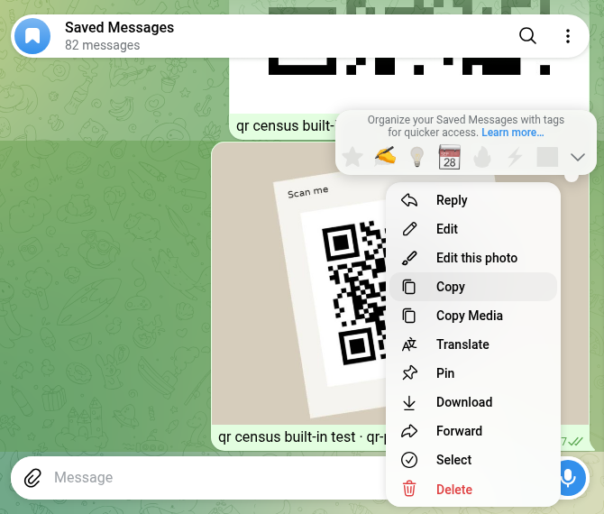
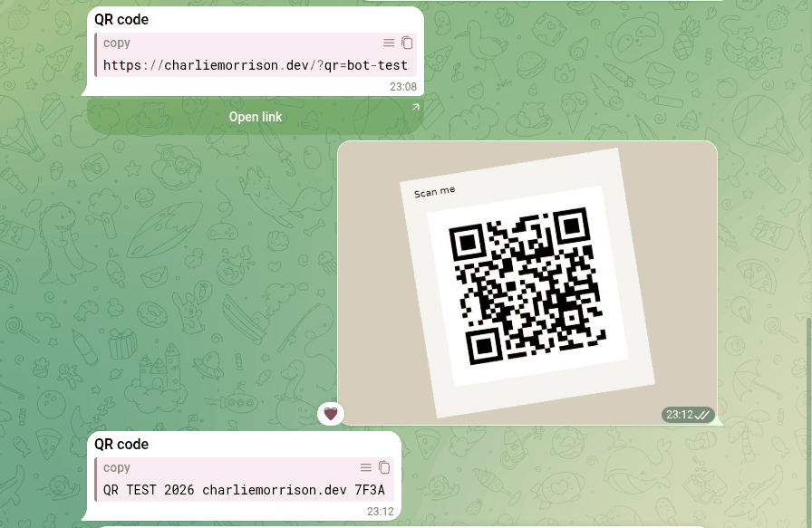

Telegram QR Code Bots: 65 Messaged, 10 Actually Work
Telegram can read a QR code with your phone’s camera. It can’t read one that somebody sent you as a picture, at least not in either of its web apps. That gap is what QR bots are for, so I found 65 of them in Telegram’s own search and messaged every one.
44 never answered. Ten did the job. Five scanners read all three of my test codes character for character, including a tilted, blurry JPEG made to look like a photo from a gallery. Eight generators turned my text into a clean code, with no watermark and no link of their own inside, three of them the same bots that scan. The codes aren’t equal, though: four use the lowest error correction, and a small white patch over the middle broke all four.
How to scan a QR code in Telegram without a bot
On a phone you don’t need a bot for a code in front of you. Telegram’s 1 January 2025 update says the in-app camera on Android and iOS now recognizes QR codes by default: swipe right on the main screen, or on Android tap the camera icon in the bottom right corner. A second route, from a Telegram admin’s reply on the “Qr Code scanner” suggestion (15,114 votes, marked Fixed): open your own QR code in your profile and tap Scan QR Code. I have no phone of my own to test this on, so that is what Telegram says, not what I measured. Neither page mentions reading a code from a picture already in a chat.
That case I could test. I put my test codes into Saved Messages and looked for a way to read them in both Telegram web apps. In Web K and Web A the right-click menu offers reply, edit, copy, download, forward, pin and delete, and Web K adds Translate. The photo viewer edits, rotates and zooms. Nothing reads the code. I didn’t have Telegram Desktop to try.

So if someone sends you a QR code as a picture and you’re on a computer, Telegram won’t open it. That’s the job the scanner bots below claim to do.
How I tested
- Corpus. 14 searches in Telegram’s own search box, from what Google suggests for “telegram qr code bot”: qr code, qr generator, qr scanner, qr reader, scan qr, barcode and so on, plus the Russian and Ukrainian words. They gave 90 different bots. None had the verified badge. Two web searches for lists of Telegram QR bots found only code on GitHub and QR websites, so every bot here came from Telegram’s search.
- Not every “QR” bot is for you. 25 of the 90 say in their own name or description that they do something else, so I didn’t message them: a video-circle maker, a car-number game, a factory pass, a pallet scanner, payment and crypto-address codes, a Wi-Fi-only generator. The biggest bot in the whole search, Barcodia (20,388 monthly users), is a game where you scan barcodes to find monsters.
- Two I left alone on purpose: “scanners” for MAX, the Russian messenger you log in to on a computer by scanning a QR code. A login QR is a key to an account; OWASP calls the trick QRLJacking: “victim scans the attacker’s QR code results of session hijacking”.
/start, then 10 seconds. The other 65 got/starton 26 October 2026, one every 15 seconds. Silent chats were checked again later.- Three test codes I made myself: one with the plain text
QR TEST 2026 charliemorrison.dev 7F3A, one with a link to this site plus a marker I can see in my analytics, and the text code printed on a card, tilted, blurred and saved as a low-quality JPEG. Each decoded back to exactly what it holds before any bot saw it. - What counts as a pass. A scanner’s reply must contain the exact text or link, character for character. A generator’s picture must decode to exactly the text I sent. I also looked at each picture for a watermark or logo, and checked that the code holds my text and not a link of theirs.
- Nothing was paid for, no channel was joined, no phone number was shared.
Who answered at all
Of the 65, 19 answered within 10 seconds and two more later, one after 13 seconds and one after 18 minutes 42 seconds. The other 44, two out of three, said nothing, and three days later, on 29 October, their chats were still empty. Among the bots that did answer:
- Six say they read a QR code from a picture.
- Ten make QR codes from text, three of them the same bots that also scan. Some ask first which kind you want: text, a link, a phone number, Wi-Fi, or a barcode.
- Two only offer a camera button, one inside a Mini App and one on an outside website (more on that below).
- Six are closed or something else: “no access”, “admins only”, a test bot that told me to get out, a shop’s order checker, a channel wall, and a shop.
The scanners: five of six read every code
On 29 October each of the six scanners got the same three pictures as ordinary photos, the way you’d share one from your gallery, with at least 30 seconds between two pictures to the same bot. Five sent back the exact text or link all three times, each within about a second.

| Bot | Text code | Link code | Tilted photo | What the answer looks like |
|---|---|---|---|---|
| @qrcrbot | Exact | Exact | Exact | “The QR-Code contains this Text”, or “this URL” for a link |
| @qrscaner_robot | Exact | Exact | Exact | Code type and the value in a copy box, plus an Open link button for links |
| @Qr_robot | Exact | Exact | Exact | “Decoded from the photo”, the code type, then the text |
| @QRhelp_bot | Exact | Exact | Exact | Just the text, with a Deep Scan button I didn’t need |
| @QR_Codee_Bot | Exact | Exact | Exact | Just the text |
| @krab_work_qr_reader_bot | No | No | No | “Not allowed”, three times |
Two didn’t do what their welcome said. QR_Codee_Bot says, in Uzbek, that it reads only codes it made itself, and it read all three of mine. The Ukrainian krab_work_qr_reader_bot says “send me a photo” and answers every photo with “Not allowed”: someone’s work tool, closed to outsiders, and the welcome doesn’t say so.
I expected the blurry photo to split the good scanners from the bad, and it didn’t. Reading a clear QR code from a photo is a solved problem. The bots differ in what they do around it: two tell you whether the code holds plain text or a link before you open anything, and that matters more than speed when the code came from a stranger.
The generators: eight made a working code, none added a watermark
Ten bots got the text of my first test code. Two needed a button first: QR on BarcodeCrafterBot’s keyboard, Texto on Code_QR_bot. Eight sent back a picture within two seconds, and every one decodes to exactly my text. I looked at all eight: no watermark, logo or ad, and no code that points to a link of the bot’s own. Two bots put their handle in the message under the picture (“Created in @qr_robot”), but that stays in Telegram and isn’t part of the code.
The other two said nothing within a minute. QR_coder_Bot only ever greeted me. code_qr_ru_bot needed 18 minutes to answer /start on 26 October, but my text got nothing: I re-read both chats on 30 October, 24 hours after the send, and neither bot had replied.
| Bot | Picture | Error correction | Margin | Still read with a patch over |
|---|---|---|---|---|
| @QR_per_second_bot | 1175 × 1175 PNG file | H | 5 modules | 15% |
| @Qr_robot | 390 × 390 photo | H | under 1 module | 15% |
| @Code_QR_bot | 320 × 320 photo | M | 4 modules | 10% |
| @qrcode_yasovchi_bot | 320 × 320 photo | M | 4 modules | 10% |
| @QR_Codee_Bot | 800 × 800 photo | L | 4 modules | less than 5% |
| @qr_genpic_bot | 600 × 600 photo | L | 4 modules | less than 5% |
| @QRhelp_bot | 680 × 680 photo | L | 2 modules | less than 5% |
| @BarcodeCrafterBot | 300 × 300 photo | L | 2 modules | less than 5% |
Error correction is the spare data a QR code carries so it still reads when part of it is dirty or covered. Denso Wave, the company that invented the QR code, describes the levels: L for clean places, Q or H for factories where codes get dirty, and M (15%) as the one most often picked. I put a white square over the middle of each code, covering 5, 8, 10, 12, 15 and 20% of it, and decoded again. All four level-L codes failed at 5%. The two M codes still read at 10%, the two H codes at 15%, and nothing read at 20%. For a code on paper that gets handled, or with a logo in the middle, pick an H bot.
Margin is the white border. Denso Wave’s guide to code size says “QR Code requires a four-module wide margin at all sides of a symbol”, a module being one small square. Qr_robot gives less than one module, QRhelp_bot and BarcodeCrafterBot about two. My decoder still read all three on a dark background, but before printing one I’d add white space.
Two things I didn’t expect. Code_QR_bot (Spanish) and qrcode_yasovchi_bot (Uzbek) sent back the same file, byte for byte, same SHA-256: two bots, one engine. And QR_per_second_bot, the only one that sent a PNG file instead of a compressed photo, gave the sharpest picture for free, with rounded dots. Its PDF and “pretty” buttons are marked Pro; I didn’t need them.
The ones that weren’t what they said
- A “QR code scanner” that is a shop. A bot named “Сканер QR Кодов” (QR code scanner in Russian) greets you with “Welcome to our shop!” and buttons for Lottery, Cart and Delivery terms. No scanner. I didn’t press anything.
- A scanner that is someone else’s web page. @readQRbot’s one button, Scan QR Code, opens a page on a third-party
.rudomain that asks for your camera. The scanning, and your camera feed, happen on that site. I didn’t open it. - A generator behind a channel. @KingQrCodeMakerBot wants you to join a VPN channel first, and only then will it make a code.
Did any scanner open my link?
The link code carries a marker, so if a scanner or anything behind it opened the page, the visit would show up in my analytics. The five link scans went out between 23:05 and 23:09 Kyiv time on 29 October. All five scanners sent the link back as text. QR_Codee_Bot sent it as a bare URL, so Telegram put a preview card under it, as it does for any link; qrscaner_robot added an Open link button that does nothing until you press it. Update, 30 October: 24 hours after the sends, the marked link had zero visits. The analytics were working: they logged 131 page views on 29 October, tagged links included. So none of the five scanners, and nothing behind them, opened the link in a browser. What analytics can’t see is a plain fetch that runs no JavaScript. The preview card under QR_Codee_Bot’s reply is one: Telegram’s server read the page to draw it. My host keeps no server log, so I can’t rule such fetches in or out.
What I’d use
- To read a code someone sent you as a picture: @qrcrbot or @qrscaner_robot. Both read every code, and both show whether there’s a link inside before you open it. Read that link before you tap: a scanner tells you where a code leads, not whether it’s safe.
- To make a code: @QR_per_second_bot: a large PNG, the highest error correction, a proper margin. @Qr_robot also uses level H, but add white space before printing.
- On a phone with the code in front of you: no bot. Use Telegram’s in-app camera or your phone’s camera app.
- Never: a “scanner” for login codes, or one whose only button opens somebody else’s website and asks for your camera.
A Telegram bot that asks for nothing
The free Party Game runs Truth or Dare, Never Have I Ever and Would You Rather as a Mini App inside Telegram, in English or Ukrainian, depending on your Telegram language. No Pro button, no channel to join, nothing to scan.
Open the Party Game Need to turn a voice note into text or a photo into a PDF instead? See the converter bots I tested.FAQ
How do I scan a QR code in Telegram?
On a phone, Telegram says its in-app camera reads QR codes by default since the 1 January 2025 update: swipe right on the main screen, or on Android tap the camera icon in the bottom right corner. You can also open your own QR code in your profile and tap Scan QR Code. That is Telegram’s description; I had no phone to check it on.
Can Telegram scan a QR code from a photo or the gallery?
Not on a computer: in both Telegram web apps a QR code sent as a picture has no scan option, and Telegram’s own pages don’t mention it for phones either. For that you need a scanner bot or your phone’s camera app. In my test five bots read a code from an ordinary photo, including a tilted, blurry JPEG: @qrcrbot, @qrscaner_robot, @Qr_robot, @QRhelp_bot and @QR_Codee_Bot.
Is it safe to send a QR code to a Telegram bot?
Depends on the code. A menu, a link or a Wi-Fi password you’d share anyway is low risk. A login QR code is not: it lets whoever scans it into your account, which is why I skipped the two “MAX scanner” bots. Also watch where the scanning happens: one bot’s only button opened someone else’s website and asked for my camera. In my test none of the five scanners opened a link from a code in a browser; they sent it back as text and left the opening to you.
Which Telegram bot makes the best QR code?
In my test, @QR_per_second_bot: the only one of eight generators that sent a PNG file, 1175 pixels wide, with the highest error correction (H) and a full margin. Its code still read with 15% of it covered; the four level-L codes stopped at 5%.
Do Telegram QR generator bots add a watermark?
None of the eight that worked for me did. I looked at every picture, and none had a watermark, logo or ad, and every code decoded to exactly my text, not to a link of the bot’s own. Two bots put their own handle in the message under the picture, but that isn’t part of the code.
Related reading
- Telegram converter bots: 96 messaged, 25 did the job
- Telegram sticker bots: 59 tested with 1 sticker and 1 photo
- Telegram translator bots: 78 tested, 7 translated
- Fun Telegram bots: 117 opened, 16 work
- Telegram AI bots: 91 tested, the only verified one is off
- Telegram reminder bots: 82 checked, 3 actually remind you